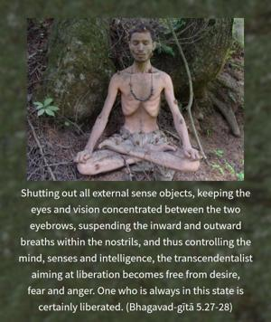

Shutting out all external sense objects, keeping the eyes and vision concentrated between the two eyebrows, suspending the inward and outward breaths within the nostrils, and thus controlling the mind, senses and intelligence, the transcendentalist aiming at liberation becomes free from desire, fear and anger. One who is always in this state is certainly liberated.



Being engaged in Kṛṣṇa consciousness, one can immediately understand one’s spiritual identity, and then one can understand the Supreme Lord by means of devotional service. When one is well situated in devotional service, one comes to the transcendental position, qualified to feel the presence of the Lord in the sphere of one’s activity. This particular position is called liberation in the Supreme.
After explaining the above principles of liberation in the Supreme, the Lord gives instruction to Arjuna as to how one can come to that position by the practice of the mysticism or yoga known as aṣṭāṅga-yoga, which is divisible into an eightfold procedure called yama, niyama, āsana, prāṇāyāma, pratyāhāra, dhāraṇā, dhyāna and samādhi. In the Sixth Chapter the subject of yoga is explicitly detailed, and at the end of the Fifth it is only preliminarily explained. One has to drive out the sense objects such as sound, touch, form, taste and smell by the pratyāhāra process in yoga, and then keep the vision of the eyes between the two eyebrows and concentrate on the tip of the nose with half-closed lids. There is no benefit in closing the eyes altogether, because then there is every chance of falling asleep. Nor is there benefit in opening the eyes completely, because then there is the hazard of being attracted by sense objects. The breathing movement is restrained within the nostrils by neutralizing the up-moving and down-moving air within the body. By practice of such yoga one is able to gain control over the senses, refrain from outward sense objects, and thus prepare oneself for liberation in the Supreme.
This yoga process helps one become free from all kinds of fear and anger and thus feel the presence of the Supersoul in the transcendental situation. In other words, Kṛṣṇa consciousness is the easiest process of executing yoga principles. This will be thoroughly explained in the next chapter. A Kṛṣṇa conscious person, however, being always engaged in devotional service, does not risk losing his senses to some other engagement. This is a better way of controlling the senses than by aṣṭāṅga-yoga.